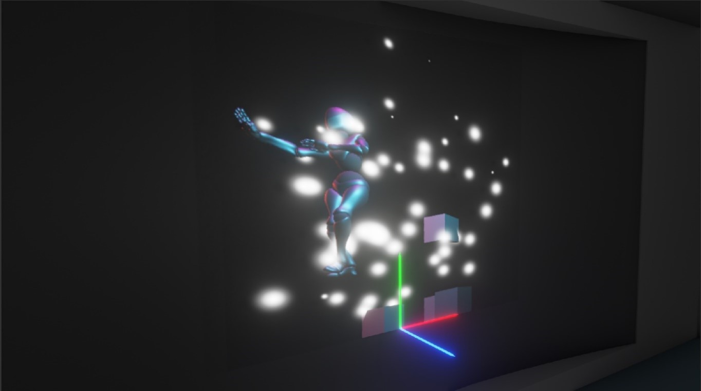

Interface
Le point central est le bas centre de l’écran, c’est à partir de ce point-là que toutes les modifications des coordonnées auront lieu à l’aide du panneau latéral, à activer avec la touche « Echap » du clavier.
Voici comment l’application se présente :
Hauteur de l'écran
Dans le bloc « Gestion de point de vue », on peut configurer la taille de l’écran sur lequel la projection aura lieu. Si l’écran, par exemple, mesure 4,5 mètres de hauteur, il faudra rentrer cette hauteur en centimètre, ici 450 centimètres.

Distance écran-public
Coordonnées en x : modifient la position de la personne de gauche à droite. Augmenter la valeur de x déplacera la vue vers la droite, la diminuer la déplacera vers la gauche.
Coordonnées en y : modifient la position de la personne en hauteur. Augmenter la valeur de y déplacera la vue vers le haut, la diminuer la déplacera vers le bas.
Coordonnées en z : modifient la distance entre l’écran et le public. Plus la valeur entrée est grande, plus cette distance est importante.